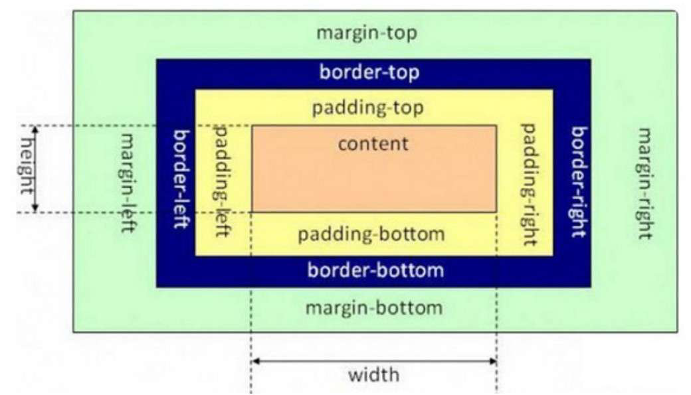

在「CSS 盒子模型」理论中,页面中的所有元素都可以看成一个盒子，并且占据着一定的页面空间。
一个页面由很多这样的盒子组成，这些盒子之间会互相影响。
盒子模型是由 4 个属性组成的：
此外，还有两大辅助属性：
内容区是 CSS 盒子模型的重心，这些内容可以是文本、图片等多中类型。内容区是盒子模型的必备组成部分，其他3个部分都是可选的。
内容区有3个属性：
width 和 height 是针对内容区而言，并不包括 padding 部分，当内容超出设定的宽高时，可以使用 orverflow 属性来指定溢出处理方式。
内边距指内容区和边框之间的空间。
内边距的属性有4种：
简写属性：
外边距指两个盒子之间的距离，可能是子元素与富元素之间，也可能是兄弟元素之间。
外边距的属性有4种：
简写属性：
此外，外边距属性语序制定负值，以此产生盒子重叠的效果。
边框与我们 15-边框样式 学过的是一样的。
边框的属性有3种：
简写属性：
示例：
元素的宽高属性是针对内容区域而言的，并不包含 padding、boder 和 margin 区域。
默认情况下，只有块元素才可以设置宽高属性，使用 display 属性可以将块元素转换为行内元素，也可以将行内元素转换为块元素。